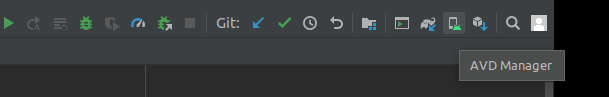
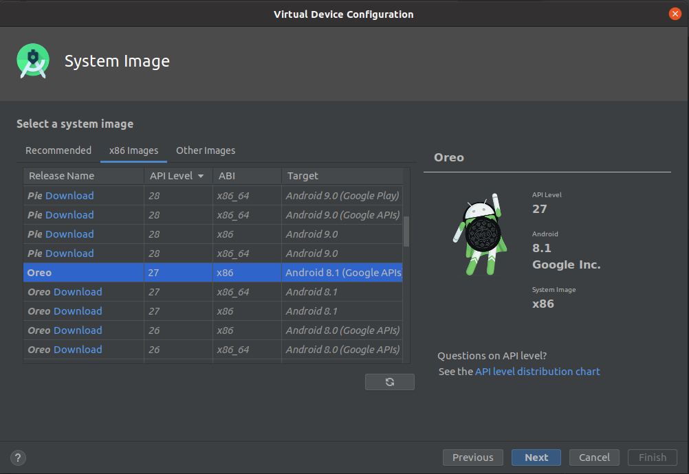
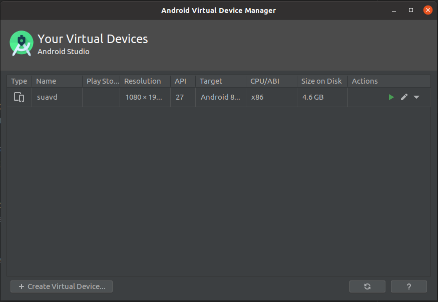
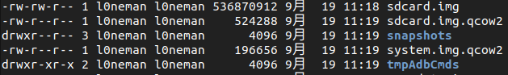
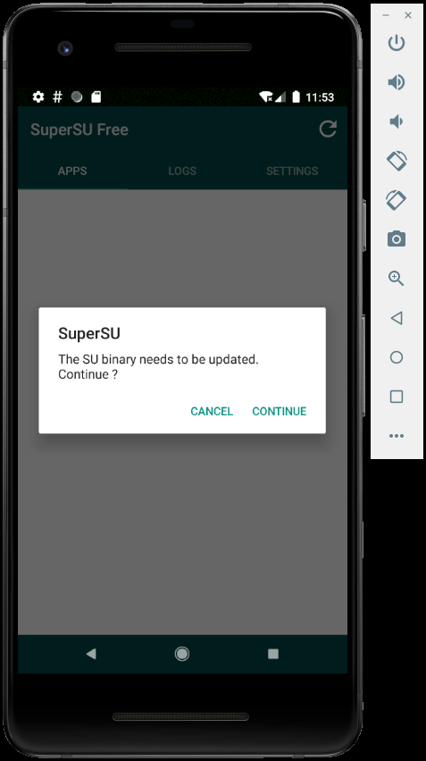
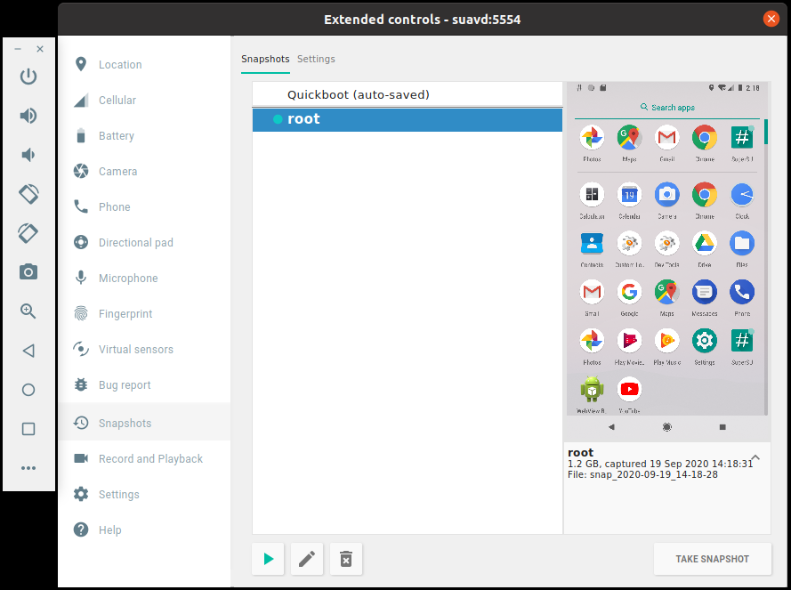
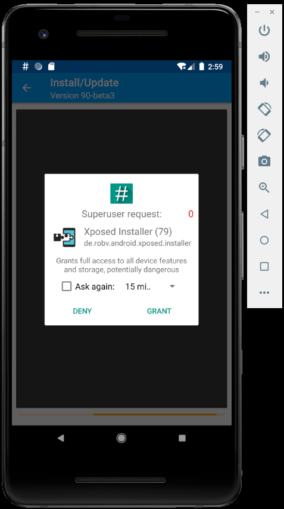
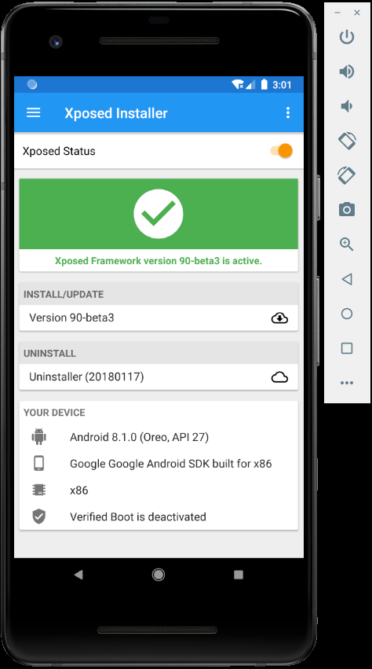
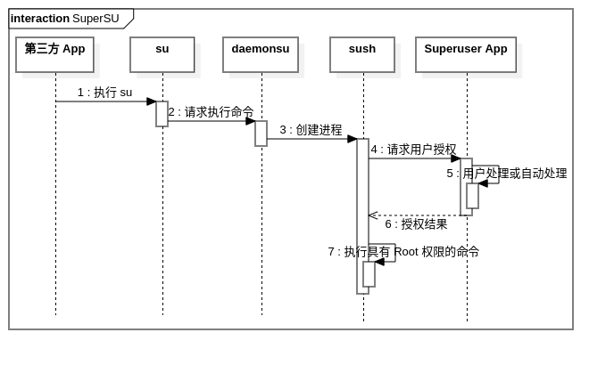

Android 模拟器 Root 和 SuperSU 安装
前言
有时需要在 Android 模拟器上测试特定功能，需要使用到 Root 权限，例如访问某些系统配置、修改系统文件等。通常情况下在 adb shell 的环境下使用 su 命令以 Root 身份执行相关命令即可满足需求，但是还有命令行难以满足的情况，例如给一个第三方应用授予 Root 权限（赋予应用使用 su 命令的权限），如果直接使用命令修改 su 文件权限，使特定应用可以访问，不仅难以控制，而且可能造成滥用 Root 权限的安全风险。所以需要一个统一管理 Root 权限授予的工具，那么可以使用 SuperSU 工具。
SuperSU 是 Android 系统上著名的 Root 权限管理工具，安装此软件后，可以方便的对 Root 权限进行管理，那么后面安装 Xposed 等依赖 Root 的工具时就很容易了。
在 Android 真机上安装 SuperSU 的方比较容易，只需要获得 Root 权限即可快速安装，在 Android 模拟器上安装略有不同。
下面是在 Android 官方模拟器上获取 Root 权限和安装 SuperSU 的方法。
环境说明
使用了如下环境进行操作：
Android Studio 4.0.1。Android 开发集成环境，方便打开 AVD（Android Virtual Device），创建模拟器
官方模拟器镜像 API 27（Android 8.1）。使用 Android 8.1 是为了安装 Xposed 最新版本
Ubuntu 20.04.1 LTS。使用的操作系统版本
SuperSU 2.8.2。最新的 SuperSU 软件的版本
安装 SuperSU 时首先需要获得 root 权限，如果直接创建默认模拟器虚拟设备，并且直接安装 Supersuer.apk 是不行的，可参考如下详细步骤来进行安装。
安装步骤概述
- 创建模拟器并获取 root 权限；
- 设置 SuperSU 所需环境；
- 安装 Superuser.apk。
1. 创建模拟器并获取 root 权限
首先从 Android Studio 右上角，点击一个手机右下角有 Android 机器人图标的按钮（AVD Manager），打开 AVD 管理界面。

然后选择 [+ Create Virtual Device] 创建一个 Android 模拟器。
[Hardware] 可随意选择，这里选择 [Pixel 2]，[System Image] 这里选择了 [X86 Images] 中的 Oreo-27-x86-Android 8.1 (Google APIS)（注意：这里一要选择后面有 Google APIS 的镜像，否则不能获取 Root 权限）。

名称这里设置为 suavd。创建后，此时 avd 列表中出现一个名为 suavd 的模拟器。

接下来获取 Root 权限，非常简单，模拟器已经提供了 Root。
在 Shell（Unix、Linux）或 DOS（Windows）中输入如下命令，即可使用 Root 身份进入 Shell：
1 | $ adb shell |
或者：
1 | $ adb root |
提示：如果使用了非 Google APIs 的镜像，进入 adb shell 后将不支持 su 命令；如果输入 adb root 将会出现如下错误提示：
1 | adb root: |
2. 设置 SuperSU 所需环境
有了 Root 权限，接下来为安装 SuperSU 做准备，SuperSU 本身是一个 Root 权限管理软件，但本身并不具有 Root 权限，要安装它，需要授予它 Root 权限。
SuperSU 包含一个 su 可执行文件和一个 Superuser.apk，只需要把 SuperSU 提供的 su 可执行文件替换系统的 su 文件，并且给予权限 -rwsr-sr-x (6755) 即可。
一般在实际设备上有两种方式替换文件：
- 手动将 SuperSU 的
su文件替换系统文件，需要 Root 权限； - 通过 Recovery 模式直接将
su文件已补丁包的形式刷入。
对于模拟器来说，它没有 Recovery 模式，是直接使用 img 镜像启动的，所以只能使用第一种方法。
首先下载 SuperSU 的相关文件：
在这里下载：https://supersuroot.org/download/
选择 Recovery V2.82 Flashable.zip 进行下载，里面包含各个架构所需的 su 文件，以及 Superuser.apk 安装包。
现在查看模拟器原始的 su 文件位置：
1 | generic_x86:/ # which su |
根据模拟器架构（这里是 x86），取出压缩包中的 su.pie 或 su 文件，
这里对于 Android 5.0 版本及之上的设备来说，需要使用 su.pie 文件，它是使用 -fPIE 标记编译的位置无关的可执行文件，具有地址空间随机化特性。
上面已经有了 Root 权限，现在可以进行替换了。
首先打开创建的模拟器 suavd（点击绿色三角形），然后进入并查看模拟器的 su 命令所在的路径：
1 | $ adb shell |
下面进行替换：
1 | $ adb root |
adb remount 是为了将 /system 挂载为可写。
然而出现了报错，提示 /system 是只读文件系统，无法写入文件。解决办法如下：
关闭模拟器，使用命令行重新启动模拟器，并指定 -writable-system 选项（emulator 程序在 Android SDK 的 emulator 路径中，如果配置了环境变量，可以直接使用 emulator 命令，这里使用了绝对路径）：
1 | $ ~/Android/Sdk/emulator/emulator -avd suavd -writable-system |
此时模拟器的 /system 就具备可写属性了，查看模拟器的文件路径（在 ~/.android/avd/suavd.avd），会发现一个 system.img.qcow2 文件，它是模拟器的虚拟文件系统，目的是将只读镜像 system.img 具备可写的特性，修改 /system 的内容将被保存在 system.img.qcow2 中。

如果不使用 -writeable-system 选项将不会创建这个文件，那么 /system 也就不可写。
现在重新执行上面的命令即可完成替换：
1 | $ adb root |
可以了，接下来按部就班设置 SuperUS：
1 | $ adb shell |
上面命令解释如下：
- 设置权限，使 SuperSU 提供的
su可执行文件能够被所有应用执行； - 初始化安装
su； - 设置
su守护进程； - 关闭 SELinux 安全策略，解除 Root 权限的限制。
这样就完成了 SuperSU 环境的设置。
提示：如果高于 Android 5.0 版本使用了 su 文件替换，而不是 su.pie ，将会出现如下情况：
1 | generic_x86:/ # su --install |
3. 安装 SuperSU App
在环境设置完毕后，直接安装 Supersuer.apk 即可，在压缩包中 common/Superuser.apk 中。
1 | $ adb install Superuser.apk |
安装后打开在模拟器中打开，显示如下，则安装成功，如果显示 Root undetected，则安装失败，按照上面步骤进行检查。

这里选择 CANCEL 就可以，如果选择 CONTINUE 更新文件，可能会卡在开机界面导致无法启动系统。
为了保证模拟器下次启动能够正常运行 SuperSU 保证 Root 状态，可以创建一个 Snapshot（快照），点击模拟器右下角的溢出菜单，点击 [TAKE SNAPSHOT]，创建一个快照，重命名为 root。
下次启动模拟器，从这里直接运行快照，将恢复到 Root 时的状态。

注意：再次启动模拟器时，不能从 Android Studio 中的 AVD Manager 直接启动，依然需要使用命令行加 -writable-system 选项启动，因为默认的启动不具备 /system 写权限。
测试
为了测试 SuperSU 是否可用，这里选择安装 Xposed 框架进行测试。
1 | $ adb install XposedInstaller_3.1.5.apk |
进入主界面，点击 INSTALL/UPDATE 安装 Xposed 将会出现 Root 授权界面，点击授权后，重启，成功激活 Xposed 框架。


SuperSU 工作原理
根据开源版本的 superuser 了解 SuperSU 工作原理：
- daemonsu 为
su启动的守护进程； - 现在第三方应用开始调用
su命令，请求申请 Root 权限； su是一个可执行文件，内部与daemonsu进行通信，发送执行命令请求；daemonsu创建sush子进程，sush进程使用am（Activity Manager）命令启动 Superuser 应用，请求授权，出现用户授权界面；- 授权通过，Superuser 应用通过 socket 返回给
sush用户授权结果，通过授权，则sush选择是否执行请求的命令。
时序图如下：

参考
Android 模拟器 Root 和 SuperSU 安装
https://l0neman.github.io/2020/09/19/android-模拟器-root-和-supersu-安装/